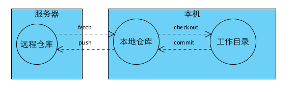
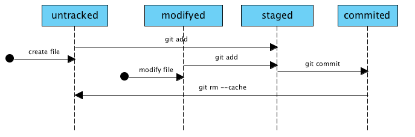
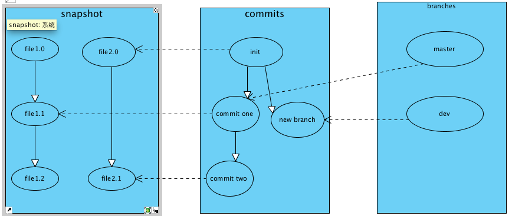

Your browser doesn't support the features required by impress.js, so you are presented with a simplified version of this presentation.
For the best experience please use the latest Chrome, Safari or Firefox browser.
@author 任行 @time 2013/07/29



Thank you!
This presentation is built with impress.js. Here is the source code: git@github.com:lihongxun945/git-ppt.git